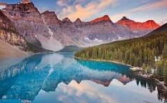
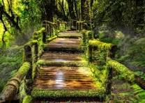
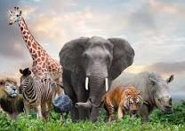
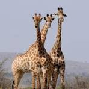
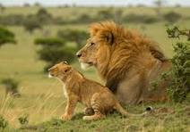
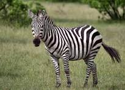
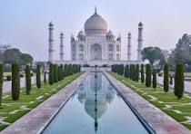

Nature Photos

The image showcases a beautiful natural landscape filled with greenery and calmness. Tall trees stand gracefully, their leaves gently rustling in the wind. The scene is vibrant and full of life.

In the background, majestic mountains rise high into the sky, partly covered by soft white clouds. Their snow-capped peaks add a touch of purity and serenity to the overall view.

A clear blue river flows gently through the landscape, reflecting the sky and the trees along its banks. Its peaceful movement brings a sense of calm to the viewer.

A clear blue river flows gently through the landscape, reflecting the sky and the trees along its banks. Its peaceful movement brings a sense of calm to the viewer.

A clear blue river flows gently through the landscape, reflecting the sky and the trees along its banks. Its peaceful movement brings a sense of calm to the viewer.
Animals

The image shows a group of animals in their natural habitat. They look peaceful and comfortable in their surroundings.

There are different animals in the picture, such as deer, birds, and maybe a few monkeys. Each one is doing something — eating, resting, or moving around.

Green trees and grass cover the area, giving the animals plenty of space to live and play. It looks like a safe and healthy environment.

Some birds are flying in the sky, while others sit on branches. Their bright feathers add color to the scene.
This image reminds us of the beauty of wildlife. It shows how animals live freely in nature, just as they should.
Monuments

The image shows a group of animals in their natural habitat. They look peaceful and comfortable in their surroundings.
There are different animals in the picture, such as deer, birds, and maybe a few monkeys. Each one is doing something — eating, resting, or moving around.

Green trees and grass cover the area, giving the animals plenty of space to live and play. It looks like a safe and healthy environment.
Some birds are flying in the sky, while others sit on branches. Their bright feathers add color to the scene.
This image reminds us of the beauty of wildlife. It shows how animals live freely in nature, just as they should.